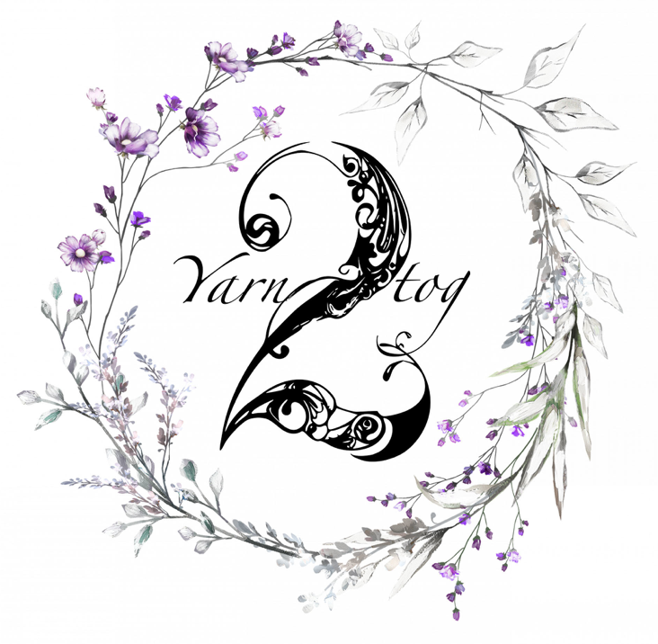
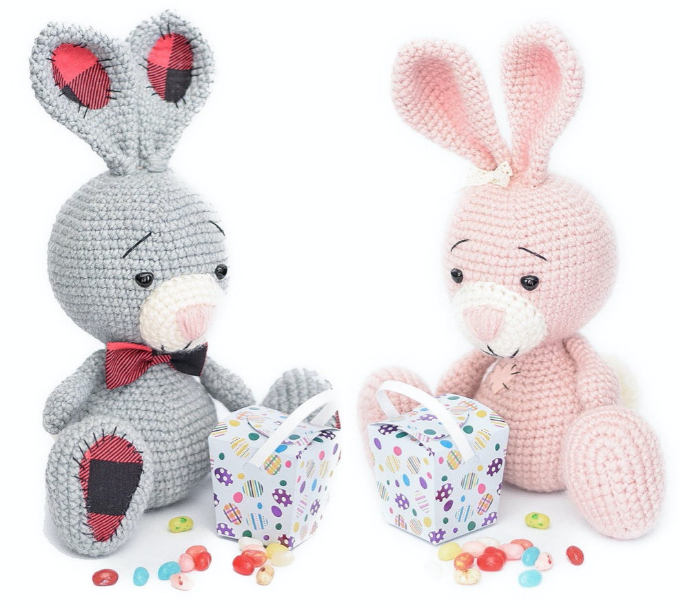

<!DOCTYPE html>
<html lang="en-ca">

<head>
  <!-- Set the page title -->
  <title>Assignment 02</title>

  <!-- Set the charset we're using to UTF-8 -->
  <meta charset="utf-8" />

  <!-- Set the screens default zoom / scale to 1 -->
  <meta name="viewport" content="width=device-width, initial-scale=1" />

  <!-- Specifies the document mode for Internet Explorer -->
  <meta http-equiv="X-UA-Compatible" content="ie=edge" />

  <!-- We are using a CSS Reset file to standardize browser default css -->
  <link rel="stylesheet" href="./reset.css" />

  <!-- This is where all of our awesome CSS code goes -->
  <link rel="stylesheet" href="./style.css" />
</head>

<body>
  <!--

    YOU HAVE TO MODIFY THE HTML TO BUILD YOUR AWESOME PAGE

  -->

</body>

</html>

<!--My HTML starts here-->
<main>
  <div class="logo-spacer"></div>
 
<section class="hero">
  
  <header>
    <h2>Yarn2Tog</h2>
  </header>

  <div class="text-container">
    <p>We offer comprehensive tutorials that guide you through 
      the fundamentals and advanced techniques. Learn the basic 
      stitches or master complex patterns with step-by-step video and 
      written instructions. Our crochet experts are here to help you 
      hone your skills, no matter where you are on your crochet journey.</p>
  </div>

  <button>Shop Now!</button>
  <button> Watch Tutorials</button>
</section>

<div class="spacer"></div>

<section class="menu">
  <header>
      <h2>Menu</h2>
      <nav>
        <ul>
          <li><a href="#patterns">Patterns</a></li>
          <li><a href="#customer-reviews">Customer Reviews</a></li>
          <li><a href="#about-us1">About Us</a></li>
        </ul>
    </nav>
  </header>
</section>


<section id=patterns class="secondary-heading">
  <header>
    <h2>Patterns</h2>
  </header>
</section>


</section>

<div class="spacer"></div>

<div class="container">

<div class="item item-1"> 
   
<h2>Baby Yoda</h2>
<h3>$5.00</h3>
  <p>The doll can be made in any colour, 
    using any worsted weight yarn. Download 
    the pattern and start crocheting today!</p>
</div>


<div class="item item-2">
  
  <h2>Hunny Bunny</h2>
  <h3>$5.00</h3>
  <p>Hunny Bunny is the first in the "My Cute Critter Collection". 
    This easy crochet pattern is written for both the Pink Bunny 
    and the Grey Bunny.
  </p>
</div>

<div class="item item-3">
  
  <h2>Melodi the Mermaid</h2>
  <h3>$5.00</h3>
  <p>This crochet mermaid doll comes with a full video tutorial 
    and is perfect for beginners. The mermaid can be made using any 
    worsted weight yarn in the colour of your choice. </p>
  </div>
  </div>

  <div class="spacer"></div>

  <section id=customer-reviews class="reviews">
    <h2>Customer Reviews</h2>
  </section>

  <div class="spacer"></div>


  <div class="text-container2">
    <p>"The variety of patterns is astounding; I've made everything 
      from cozy blankets to intricate dolls. Each pattern is a work 
      of art in itself. I can always count on Yarn2Tog for the perfect
       project to match my mood and skill level. Truly a crocheter's 
       dream come true!!"  - CrochetLover123</p>
  </div>

  <div class="spacer"></div>

  <div class="text-container2">
    <p>"As a newbie, I was hesitant to dive into crocheting, 
      but the clear and detailed tutorials on this website gave 
      me the confidence to start and improve. The combination of 
      written instructions and video demonstrations is incredibly 
      helpful. Thanks to Yarn2Tog, I've gone from making simple 
      scarves to tackling intricate patterns. It's like having a 
      personal crochet instructor at my fingertips!" -Knitter13</p>
  </div>

  <div class="spacer"></div>

  <div class="text-container2">
    <p>"Yarn2Tog's inspiration section is where I go for my daily 
      dose of crochet creativity. The photos featured here are not 
      just stunning; they're bursting with diverse ideas. I've 
      discovered unique color combinations and design concepts that 
      I would have never thought of on my own." -User2863</p>
  </div>

  <div class="spacer"></div>

  <section id=about-us1 class="about-us">
    <header>
      <h2>About Us</h2>
    </header>
  </section>


  <div class="container2">
    

    <p>Founded by a group of dedicated crocheters, 
      Yarn2Tog was born out of a shared love for this
       timeless craft. We realized that crochet is not just 
       about creating beautiful pieces but also about building 
       connections, nurturing creativity, and finding a sense of 
       fulfillment. Our carefully curated library of crochet patterns 
       spans a wide range of styles and complexities.
        Whether you're an aspiring novice or a seasoned pro, 
        our patterns are designed to spark your imagination and 
        provide you with endless creative opportunities.</p>
  </div>

  
 


</main>
</body>
</html>


